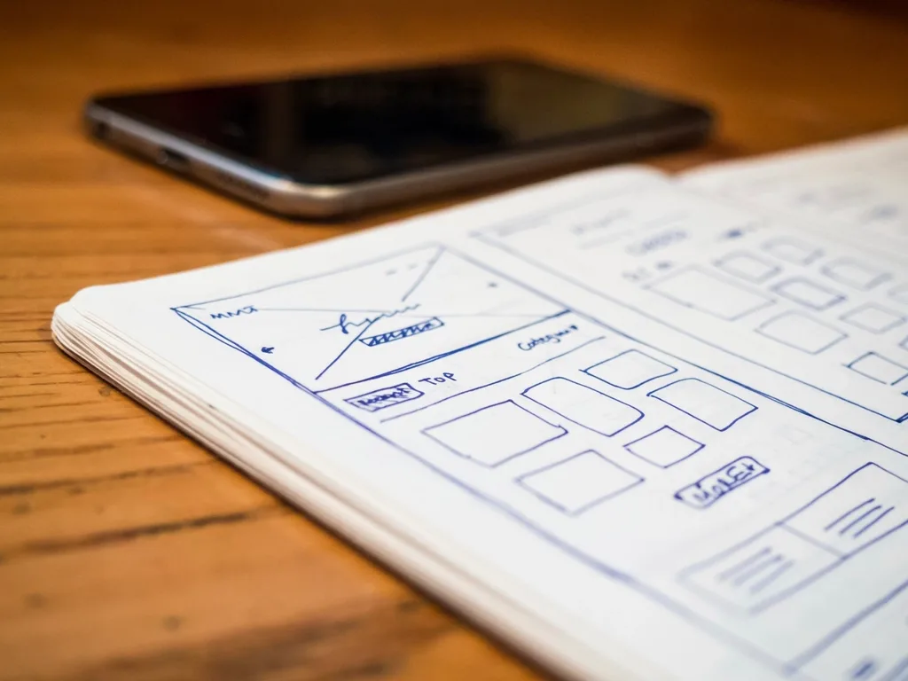
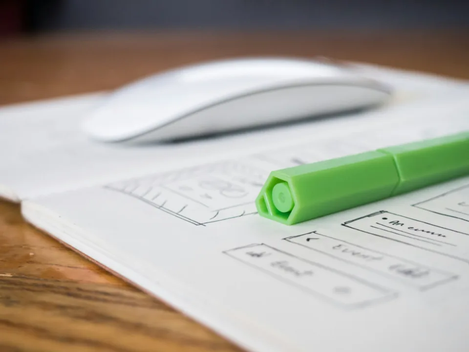
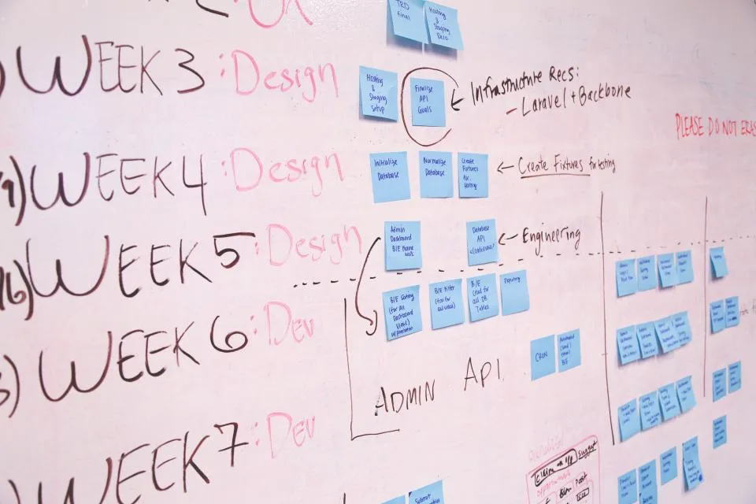

민원 신청 서비스 개선 사용성 평가화면 설계 어르신 사용자 인터뷰를 바탕으로 글자 크기와 단계 안내를 다시 정했습니다.
사내 디자인 시스템 컴포넌트문서화 제각각이던 버튼과 입력칸 규칙을 정리하고 개발팀과 함께 관리합니다.
신규 서비스 출시 일정 관리 협업일정 관리 디자인과 개발 일정을 주 단위 보드로 나누고 매주 함께 점검했습니다.화면을 그리기 전에 고객 이야기부터 정리해 와서 회의가 짧아졌습니다.
디자인 시스템 문서가 잘 정리되어 있어 새로 온 디자이너도 바로 일을 시작했습니다.
출시 뒤 고객 문의 숫자를 같이 보면서 다음 개선 순서를 정했습니다.